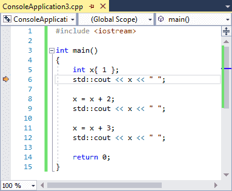
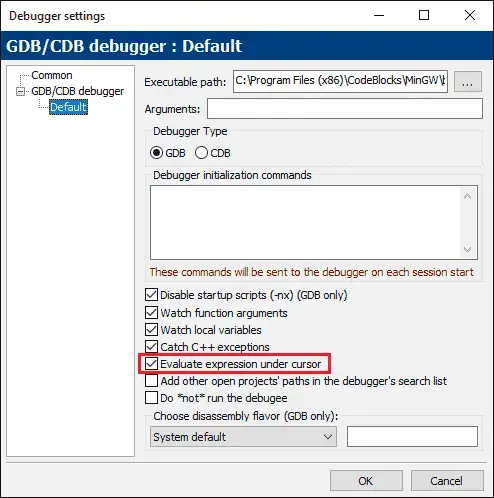
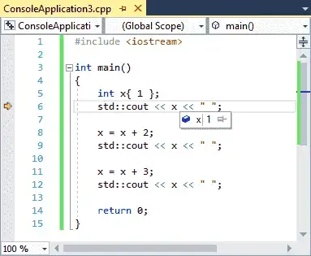
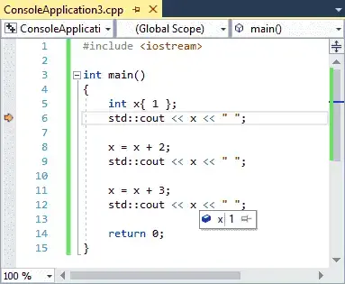
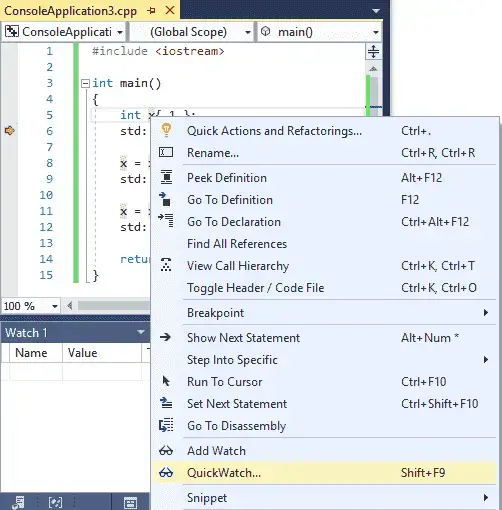
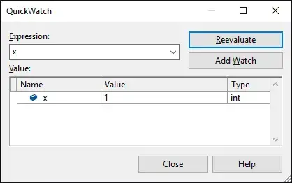
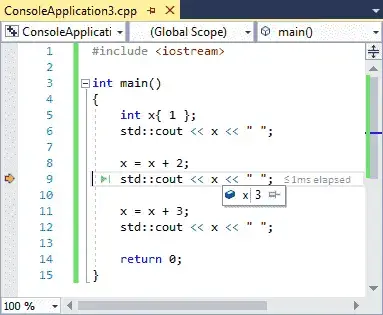
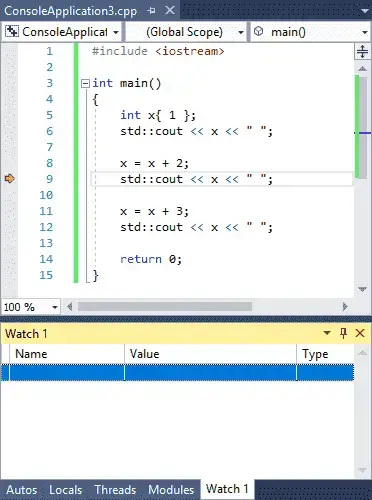
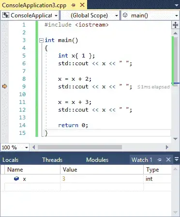

In the previous lessons (3.6 — Using an integrated debugger: Stepping and 3.7 — Using an integrated debugger: Running and breakpoints), you learned how to use the debugger to watch the path of execution through your program. However, stepping through a program is only half of what makes the debugger useful. The debugger also lets you examine the value of variables as you step through your code, all without having to modify your code.
As per previous lessons, our examples here will use Visual Studio — if you are using a different IDE/debugger, the commands may have slightly different names or be located in different locations.
Warning
In case you are returning, make sure your project is compiled using a debug build configuration (see 0.9 — Configuring your compiler: Build configurations for more information). If you’re compiling your project using a release configuration instead, the functionality of the debugger may not work correctly.
Watching variables
Watching a variable is the process of inspecting the value of a variable while the program is executing in debug mode. Most debuggers provide several ways to do this.
Let’s take a look at a sample program:
#include <iostream>
int main()
{
int x{ 1 };
std::cout << x << ' ';
x = x + 2;
std::cout << x << ' ';
x = x + 3;
std::cout << x << ' ';
return 0;
}COPY
This is a pretty straightforward sample program — it prints the numbers 1, 3, and 6.
First, run to cursor to line 6.

At this point, the variable x has already been created and initialized with the value 1, so when we examine the value of x, we should expect to see the value 1.
The easiest way to examine the value of a simple variable like x is to hover your mouse over the variable x. Some modern debuggers support this method of inspecting simple variables, and it is the most straightforward way to do so.
For Code::Blocks users
If you’re using Code::Blocks, this option is (inexplicably) off by default. Let’s turn it on. First, go to Settings menu > Debugger…. Then under the GDB/CDB debugger node, select the Default profile. Finally, check the box labeled Evaluate expression under cursor.

Hover your mouse cursor over variable x on line 6, and you should see something like this:

Note that you can hover over any variable x, not just the one on the current line. For example, if we hover over the x on line 12, we’ll see the same value:

If you’re using Visual Studio, you can also use QuickWatch. Highlight the variable name x with your mouse, and then choose “QuickWatch” from the right-click menu.

This will pull up a subwindow containing the current value of the variable:

Go ahead and close QuickWatch if you opened it.
Now let’s watch this variable change as we step through the program. Either choose step over twice, or run to cursor to line 9. The variable x should now have value 3. Inspect it and make sure that it does!

The watch window
Using the mouse hover or QuickWatch methods to inspect variables is fine if you want to know the value of a variable at a particular point in time, but it’s not particularly well suited to watching the value of a variable change as you run the code because you continually have to rehover/reselect the variable.
In order to address this issue, all modern integrated debuggers provide another feature, called a watch window. The watch window is a window where you can add variables you would like to continually inspect, and these variables will be updated as you step through your program. The watch window may already be on your screen when you enter debug mode, but if it is not, you can bring it up through your IDE’s window commands (these are typically found in a View or Debug menu).
For Visual Studio users
In Visual Studio, the watch menu can be found at Debug menu > Windows > Watch > Watch 1. Do note that you have to be in debug mode for this option to be enabled, so step into your program first.
Where this window appears (docked left, right, or bottom) may vary. You can change where it is docked by dragging the Watch 1 tab to a different side of the application window.
For Code::Blocks users
In Code::Blocks, the watch menu can be found at Debug menu > Debugging windows > Watches. This window will likely appear as a separate window. You can dock it into your main window by dragging it over.
You should now see something like this:

The watches window may or may not contain anything in it already.
There are typically two different ways to add variables to the watch window:
- Pull up the watch window, and type in the name of the variable you would like to watch in the leftmost column of the watch window.
- In the code window, right click on the variable you’d like to watch, and choose Add Watch (Visual Studio) or Watch x (replace x with the variable’s name) (Code::Blocks).
If you’re not already in a debugging session with the execution marker on line 9 of your program, start a new debugging session and run to cursor to line 9.
Now, go ahead and add the variable “x” to your watch list. You should now see this:

Now step over twice, or run to cursor to line 12, and you should see the value of x change from 3 to 6.
Variables that go out of scope (e.g. a local variable inside a function that has already returned to the caller) will stay in your watch window, but will generally either be marked as “not available”, or may show the last known value but grayed out. If the variable returns to scope (e.g. the function is called again), its value will begin showing again. Therefore, it’s fine to leave variables in the watch window, even if they’re out of scope.
Using watches is the best way to watch the value of a variable change over time as you step through your program.
The watch window can evaluate expressions too
The watch window will also allow you to evaluate simple expressions. If you haven’t already, run to cursor to line 12. Then try entering x + 2 into the watch window and see what happens (it should evaluate to 8).
You can also highlight an expression in your code and then inspect the value of that expression via hover or by adding it to the watch window via the right-click context menu.
Warning
Identifiers in watched expressions will evaluate to their current values. If you want to know what value an expression in your code is actually evaluating to, run to cursor to it first, so that all identifiers have the correct values.
Local watches
Because inspecting the value of local variables inside a function is common while debugging, many debuggers will offer some way to quickly watch the value of all local variables in scope.
For Visual Studio users
In Visual Studio, you can see the value of all local variables in the Locals window, which can be found at Debug menu > Windows > Locals. Note that you have to be in a debug session to activate this window.
For Code::Blocks users
In Code::Blocks, this is integrated into the Watch window, under the Locals node. If you don’t see any, there either aren’t any, or you need to uncollapse the node.
If you’re just looking to watch the value of a local variable, check the locals window first. It should already be there.